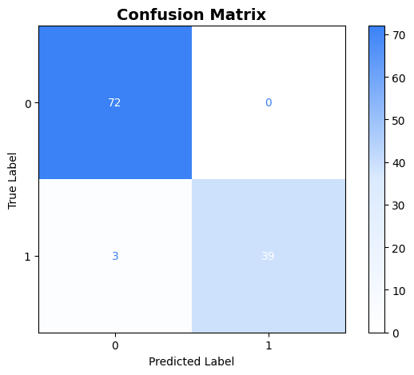
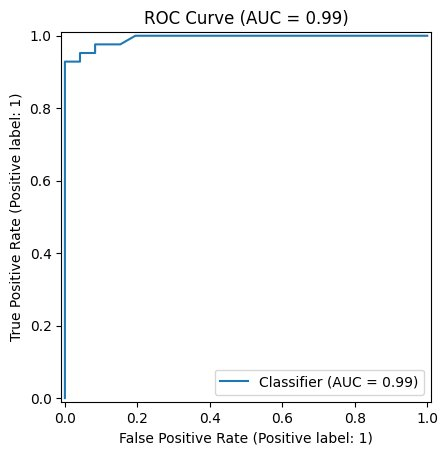
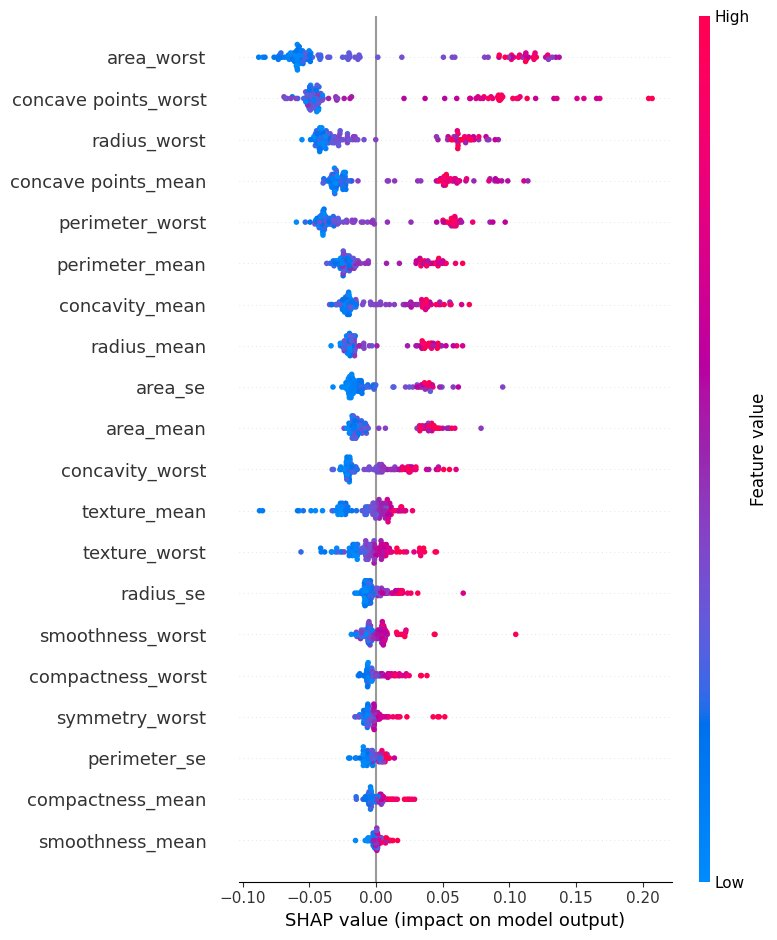
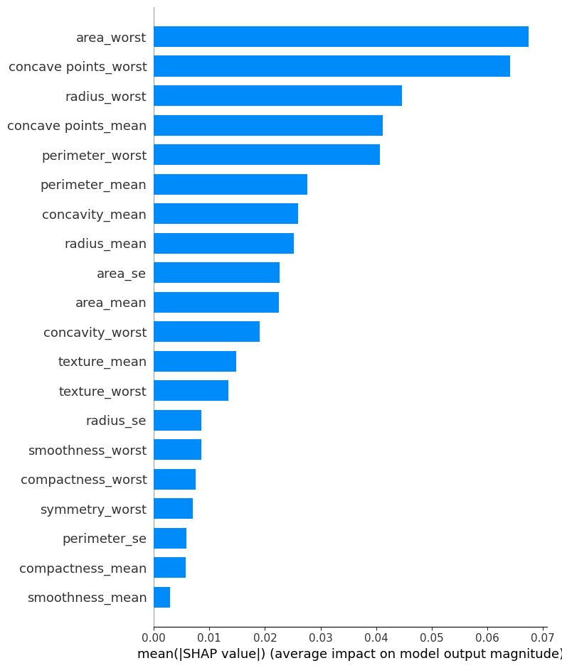
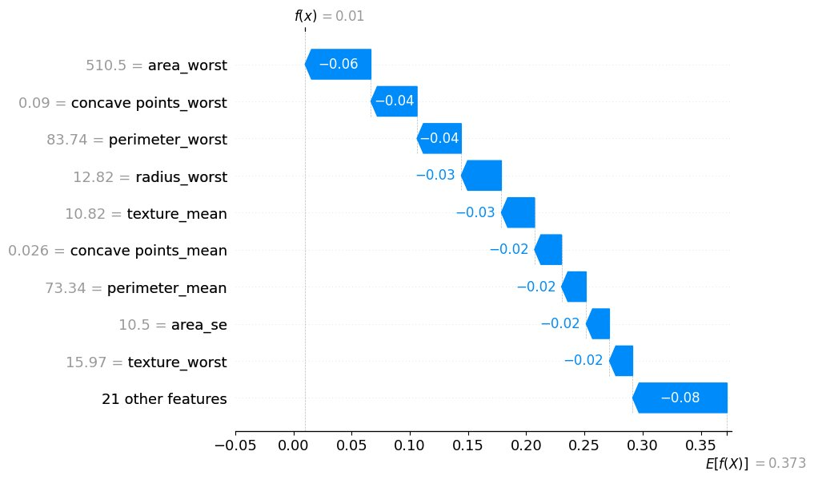
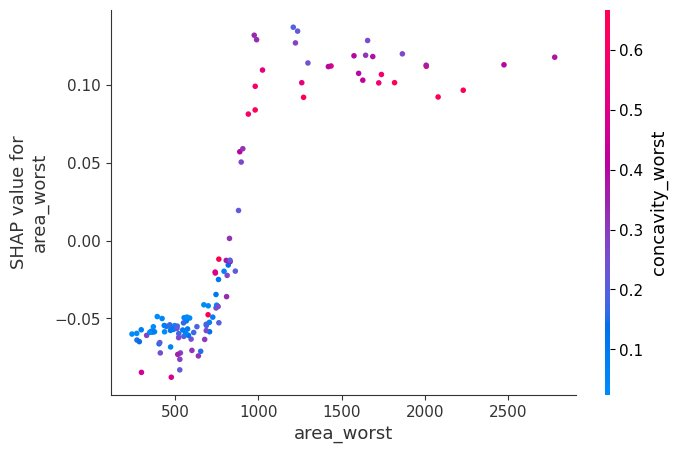

View Project on GitHub
View Project on GitHub
The Problem with Accuracy Alone
Imagine a radiologist receiving an AI verdict: "Malignant, 97% confidence." The number is impressive. But which measurement tipped the scale? Without an answer, how can any clinician stake a patient's treatment on it?
Machine learning is reshaping oncology, drug discovery, and diagnostics at a remarkable pace. Yet most high-performing models, particularly models like Random Forests, operate as black boxes they consume data, produce predictions, and reveal nothing about their internal reasoning. In low-stakes applications this is merely inconvenient in healthcare it can be dangerous.
This tutorial traces the full lifecycle of an explainable AI project. Starting from a real breast-cancer dataset, we train a powerful classifier examine its limitations then apply SHAP (SHapley Additive exPlanations) to expose exactly what the model has learned and why that transparency matters.
The Data Behind the Diagnosis
The Breast Cancer Wisconsin Dataset contains digitised measurements from biopsies of breast masses. Each of the 569 samples is described by 30 numerical features capturing cell nucleus size, shape, and texture, and is labelled either Malignant (212 cases) or Benign (357 cases).
Features are organised into mean, standard error, and worst measurements per characteristic. The worst suffix captures peak abnormality values which, as SHAP will confirm, carry the greatest predictive weight. Two non-informative columns, a patient id and an empty Unnamed: 32, were removed during preprocessing. The target was encoded as 1 = Malignant and 0 = Benign, and the data was split 80/20 preserve class proportions in both sets.
The Classifier - Random Forest
A Random Forest of 100 decision trees was trained on the 455-sample training set. Each tree learns from a different random subset of the data the final prediction is determined by majority vote across all trees. This ensemble approach reduces overfitting while remaining robust to the slight class imbalance present in the dataset.
How Well Does the Model Perform?
Before seeking explanations it is important to understand what the model achieved. I have used the Confusion Matrix and the ROC Curve to completly understand its strengths and residual weaknesses on the 114-sample test set.
Confusion Matrix
A confusion matrix maps every prediction against its true label across four outcomes True Positives, True Negatives, False Positives, and False Negatives which are malignant cases that the model misses entirely.

The model correctly classified all 72 benign cases which means zero false positives and 39 of 42 malignant cases. The 3 false negatives, real cancers predicted as benign, represent the model's most critical failure. In oncology, a missed malignancy can delay treatment by months.
ROC Curve
The ROC curve helps us to show how model performs at all possible points of dicision making plotting the true positive rate against the false positive rate.

An AUC of 0.99 indicates near-perfect ability to rank malignant cases above benign ones. Yet even here excellence is not transparency we still cannot explain why the model is right, or diagnose why it occasionally fails.
The Gap Between Performance and Understanding
97% accuracy sounds reassuring until question arrises, which three patients did the model miss and why?
High accuracy can hide important problems. A model might look good overall but still make some mistakes for cetain groups or rare cases or new data thats different from what its has been trained of.
| With High Accuracy Alone | What We Still Cannot Do |
|---|---|
| Predict benign vs malignant with 97% overall correctness | Explain which features drove any individual prediction |
| Achieve AUC of 0.99 across thresholds | Identify why the 3 missed malignancies were mislabelled |
| Generalise reasonably to held-out data | Check if the model uses misleading patterns |
| Meet overall performance target | Gain the trust or meet regulatory review |
This gap between predictive performance and human understanding is precisely why Explainable AI (XAI) has become indispensable in high-stakes fields. The solution we turn to is SHAP.
SHapley Additive exPlanations (SHAP)
SHAP was introduced by Lundberg and Lee (2017) as a unified framework for interpreting any machine learning model. Its foundation is Shapley values from cooperative game theory, developed by Lloyd Shapley in 1953.
Think of the model's features as a team collaborating to produce a prediction. Shapley values answer "How much credit does each player deserve?" Each feature's contribution is averaged across every possible ordering of features guaranteeing fairness, consistency, and local accuracy.
How SHAP Works
The model carries a baseline prediction, roughly 0.37 in this project, reflecting the proportion of malignant cases in the training set. For any individual patient, each feature either raises or lowers that baseline. SHAP calculates the exact magnitude and direction of each adjustment. adding all feature contributions plus the baseline precisely reconstructs the models output making the explanation both complete and verifiable. Unlike traditional feature importance SHAP operates at two levels simultaneously:
- Global level — which features matter most across the entire dataset.
- Local level — exactly how each feature influenced one specific patients prediction.
Correlating SHAP With Random Forest
To calculate SHAP values for the Random Forest, the TreeExplainer method was used. It is designed for tree-based models and uses the tree structure to give accurate and fast results without using approximations. The explainer was applied to 114 test samples with 30 features, creating SHAP values with shape (114, 30, 2), where the last part represents the two classes. All explanations below focus on class 1 (Malignant), with a base value of 0.373.
TreeSHAP runs in polynomial time rather than the exponential time required for exact Shapley computation in general models. This makes it ideal for Random Forests with 100 trees and 30 features, while still keeping the theoretical explanation
What Insights Has The Model Captured Globally?
SHAP Summary Plot
Every dot represents one patient observation. Features are ranked by total impact horizontal position shows whether a feature pushed toward malignancy (right) or benign (left) colour encodes whether the feature value was high (pink) or low (blue) for that sample.

For area_worst (top row) the pink dots cluster to the right, indicating that large tumour areas strongly increase malignancy probability. The blue dots fall to the left indicating that small tumour areas push predictions toward benign. This dual relationship is visible in a single row for every feature simultaneously.
SHAP Bar Plot Feature Importance
The bar plot ranks features by their average absolute SHAP value, capturing overall importance regardless of direction.

The top five features are area_worst, concave points_worst, radius_worst, concave points_mean, and perimeter_worst. All five measure tumour size or shape irregularity, representing that the model has learnt real medical patterns rather than relying on misleading shortcuts.
One Patient, One Prediction, Explained Fully
Global rankings tell us what matters on average. A clinician caring for a specific patient needs to know what drove that individual prediction. The SHAP Waterfall plot answers exactly that.
Waterfall Plot A Benign Case Explained
The waterfall plot begins at the models baseline probability (E[f(X)] = 0.373) and traces a step-by-step path to the final prediction (f(x) = 0.01). In this case, all visible contributions are negative (blue), meaning each feature reduces the probability of malignancy. This results in a strong shift toward a benign classification.

This patients area_worst = 510.5 (small tumour, SHAP = -0.06), concave points_worst = 0.09 (low irregularity, SHAP = -0.04), and perimeter_worst = 83.74 (compact boundary, SHAP = -0.04) collectively drove the prediction far below the malignancy. The model's reasoning mirrors what a pathologist would note a small, smooth, regularly-shaped mass is likely to be benign.
How Does Tumour Area Affect Risk?
The SHAP Dependence Plot focusses on each feature, area_worst, and shows how its value effects prediction. Each points is also coloured by another feature (concavity_worst) to show how they interact with each other.

1. Threshold effect: SHAP values are strongly negative below area approximately 800 (reducing malignancy risk) and sharply positive above it. The model has learned a clinically meaningful boundary for tumour size.
2. Interaction effect: Among tumours with similar areas, those with higher concavity (pink dots) receive higher SHAP values, indicating that shape irregularity increases the size signal.
3. Clinical Explanation: Pathologists have long documented that large irregular masses carry higher malignancy risk. The model learned this same pattern directly from the data.
Before and After Explainability
- Prediction delivered: "Malignant"
- No reasoning available
- Errors impossible to diagnose
- Clinician trust is low
- There are NO Regulatory justification
- Feature contributions are quantified
- Individual decisions were auditable
- Errors traceable to specific features
- Clinician trust is based on evidence
- Regulatory justification are documented
SHAP does not change the model so Random Forest remains exactly as accurate. What changes is our Understanding to it. A prediction without explanation is an claim, But with SHAP value its becomes like something that is examined, challenged, and trusted.
What insights have we gained?
The most important features are about tumour size and irregular shape, matching real medical knowledge.
The model focuses on worst values rather than averages, meaning it looks at the most abnormal cases.
The important features make medical sense, showing the model is not using misleading patterns.
Every prediction can be broken into clear reasons, helping doctors understand and trust it.
Why Transparency is a Moral Obligation
Using a machine learning model in healthcare without explanation is not just a small mistake, it is an ethical failure. When a model helps decide treatments like chemotherapy or surgery, both doctors and patients need to understand why. Without explanations, it becomes hard to support informed consent, which is a key part of medical ethics.
The three false negatives in this model show a serious issue: real cancers that were missed. Without SHAP, we cannot understand why these mistakes happened or if there is a pattern behind them. Explainability helps us learn from these errors.
Laws like the EU AI Act are starting to require high-risk AI systems to clearly explain their decisions. So, using SHAP is not just a good practice, it is becoming a requirement.
Limitations of SHAP
SHAP is among the most theoretically grounded explainability methods available but everyone should be aware of its limitations:
- Computational cost. Exact Shapley computation is exponential in the number of features. For large datasets or complex models approximate variants such as KernelSHAP are required each introducing their own criticalities.
- Correlation sensitivity. When features are highly correlated for instance radius and perimeter, SHAP values can be distributed unevenly between them making individual attributions less straightforward to interpret.
- Explanation is not causation. A high SHAP value means the model relies on a feature it does not mean that feature causally determines malignancy.
- Visual complexity. Plots with many features can be hard to understand for non-technical people without clear and simple presentation.
Conclusion
This tutorial showed that a Random Forest model can accurately distinguish between malignant and benign tumours, and that SHAP helps us understand how these predictions are made. We move from a black box model to proper understanding, where decisions can be clearly explained and trusted.
Explainability is not optional it is essential for using machine learning responsibly. SHAP helps us understand how the model makes decisions, allowing doctors and users to trust and use AI as a helpful tool.
What This Project Changed for Me
Before this project I focused only on model accuracy. Seeing SHAP explain predictions clearly showing that larger and more irregular tumours increase risk made the importance of interpretability much more clear and relevant.
The three false negatives are especially important to remember. They show the real risk of relying on a model without understanding it. SHAP does not remove errors, but it helps us identify and understand them, which is essential for responsible machine learning.
Sources and Further Reading
- Lundberg, S. M., & Lee, S.-I. (2017). A unified approach to interpreting model predictions. Advances in Neural Information Processing Systems, 30. NeurIPS Proceedings
- Molnar, C. (2022). Interpretable Machine Learning: A Guide for Making Black Box Models Explainable (2nd ed.). christophm.github.io
- SHAP Documentation. (2023). SHAP: SHapley Additive exPlanations. shap.readthedocs.io
- Pedregosa, F., et al. (2011). Scikit-learn: Machine Learning in Python. Journal of Machine Learning Research, 12, 2825-2830. scikit-learn.org
- Wolberg, W. H., Street, W. N., & Mangasarian, O. L. (1995). Breast Cancer Wisconsin (Diagnostic) Dataset. UCI Machine Learning Repository. UCI Repository
- Shapley, L. S. (1953). A value for n-person games. In H. Kuhn & A. Tucker (Eds.), Contributions to the Theory of Games (Vol. 2, pp. 307-317). Princeton University Press.